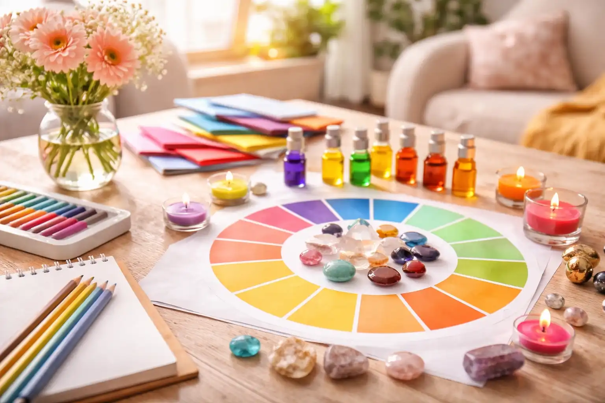
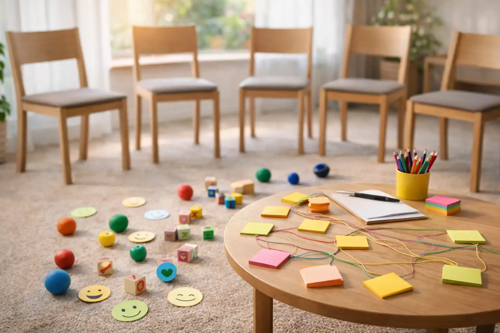

중장년

중장년 갱년기 컬러심리 집단상담
컬러심리테라피를 적용하여 자신의 불편한 감정(화, 우울)을 나누고 삶의 긍정적 결단으로 연결합니다.
- 대상
- 갱년기 증후군을 경험하고 있는 중장년(만40~64세)
- 내용
- 컬러심리테라피를 적용하여 자신의 불편한 감정(화, 우울) 나누고 삶의 긍정적 결단으로 연결
- 기대효과
- 갱년기 증후군으로 심리적 어려움을 경험하는 이용자가 모여 증상에 대한 다양한 이해를 나눔, 집단상담을 통한 소속감 제공
- ※ 2026년 집단상담은 변경가능하며, 상세 내역은 용산구가족센터 홈페이지를 참고*해 주시기 바랍니다.
- * 참고 : 용산구가족센터(https://yongsan.familynet.or.kr/center) → 프로그램안내 → 프로그램 홍보
조부모 양육스트레스 해소 집단상담
원예치료를 통한 나, 우리, 가족에 대한 이해를 제공합니다.
- 대상
- 손자녀를 양육하는 조부모
- 내용
- 원예치료를 통한 나, 우리, 가족에 대한 이해 제공
- 기대효과
- 자녀를 양육하는 조부모의 양육스트레스 감소, 집단상담 내 지지경험을 통한 심리적 긍정경험 제공
- ※ 2026년 집단상담은 변경가능하며, 상세 내역은 용산구가족센터 홈페이지를 참고*해 주시기 바랍니다.
- * 참고 : 용산구가족센터(https://yongsan.familynet.or.kr/center) → 프로그램안내 → 프로그램 홍보

취약 중장년 1인가구 집단상담
일자리 제공사업에 참여하고 있는 중장년 1인가구를 대상으로 정서적 안정 및 자아존중감 향상을 위한 다양한 활동 및 소통을 제공합니다.
- 대상
- 일자리제공사업에 참여하고 있는 중장년 1인가구
- 내용
- 정서적 안정 및 자아존중감 향상을 위한 다양한 활동 및 소통
- 기대효과
- 집단상담을 통한 긍정적 경험을 통해 정서적 안정 제공, 집단상담 참여자 간 소속감을 제공하여 근로 의욕 고취 도모
- ※ 2026년 집단상담은 변경가능하며, 상세 내역은 용산구가족센터 홈페이지를 참고*해 주시기 바랍니다.
- * 참고 : 용산구가족센터(https://yongsan.familynet.or.kr/center) → 프로그램안내 → 프로그램 홍보
- 참여방법
-
- 전화 및 온라인 신청
- 진행 시기 및 상세 내용은 해당 홈페이지 또는 전화 문의